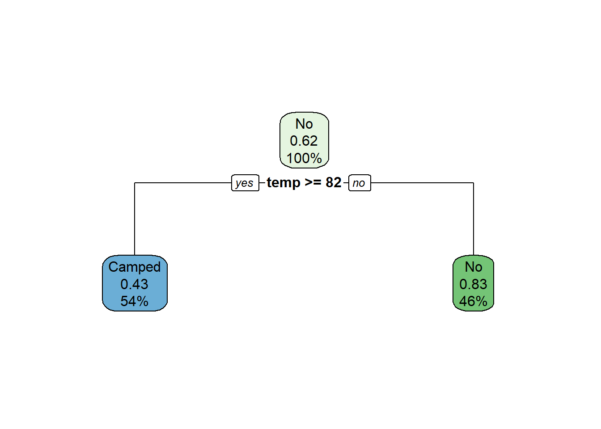
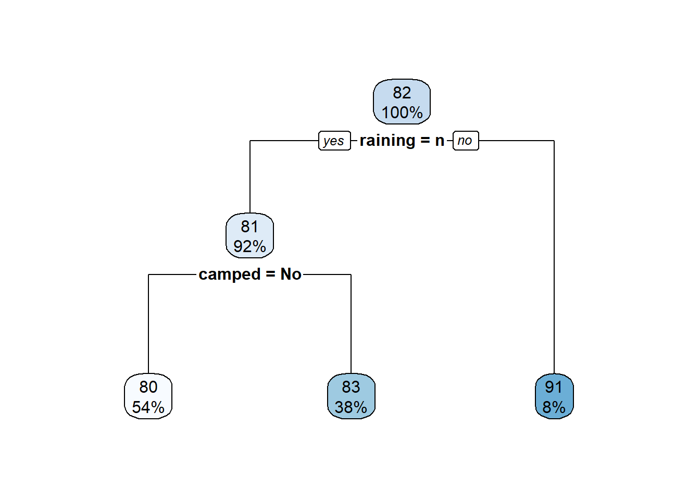
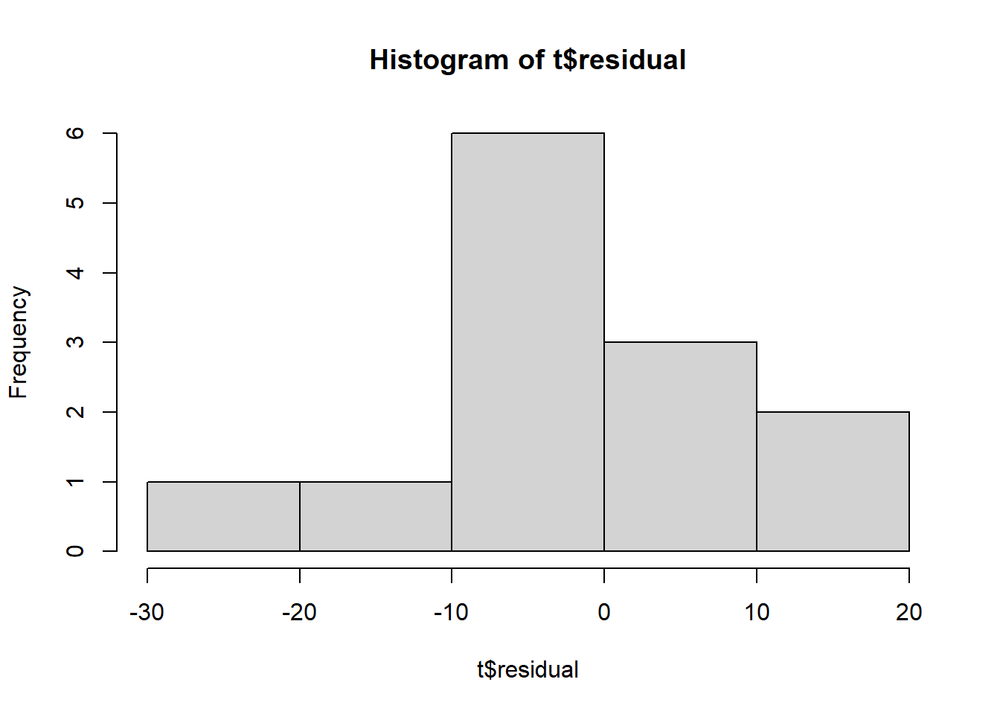

Here is great tutorial for approaches in machine learning: https://lgatto.github.io/IntroMachineLearningWithR/supervised-learning.html
This covers these topics:
Decision trees are a method for predicting an outcome from a set of variables. They are great for creating easily-understandable trees.
This creates a decision tree to predict a textual (class) output.
library(tidyverse)
library(rpart)
library(rpart.plot)
# Load data into a tibble
t <- tibble(
temp = c(67, 68, 70, 70, 76, 80, 85, 84, 89, 90, 91, 95, 100),
raining = c('n', 'n', 'n', 'n', 'n','n','n','n','n','n','y', 'n', 'n'),
camped = c('Camped', 'No', 'No', 'No', 'No', 'No', 'Camped', 'Camped', 'Camped', 'Camped', 'No', 'No', 'No')
)
# Create the model
# https://stat.ethz.ch/R-manual/R-devel/library/rpart/html/rpart.control.html
# formula: set output to the Species, and choose input fields
# data: set to our tibble
# minsplit: the minimum number of observations that must exist in a node in order for a split to be attempted.
# minbucket: the minimum number of observations in any terminal
# method: class, meaning we are predicting a discrete variable
#
m <- rpart(formula = camped ~ temp + raining,
data = t,
minsplit = 8,
minbucket = 5,
method = "class")
# Show results of model
rpart.plot(m)
# Create the predicted value and add it to our tibble
predicted <- predict(m, t, type = 'class')
t <- mutate( t,
predicted = predicted,
is_correct = predicted == camped)
# Percentage correct
print(mean(t$is_correct))## [1] 0.6923077# Show a confusion matrix
# Predicted values are in upper case.
table(str_to_upper(t$predicted), t$camped)##
## Camped No
## CAMPED 4 3
## NO 1 5This creates a decision tree to predict a numeric output with regression.
library(tidyverse)
library(rpart)
library(rpart.plot)
# Load data into a tibble
t <- tibble(
temp = c(67, 68, 70, 70, 76, 80, 85, 84, 89, 90, 91, 95, 100),
raining = c('n', 'n', 'n', 'n', 'n','n','n','n','n','n','y', 'n', 'n'),
camped = c('Camped', 'No', 'No', 'No', 'No', 'No', 'Camped', 'Camped', 'Camped', 'Camped', 'No', 'No', 'No')
)
# Create the model
# https://stat.ethz.ch/R-manual/R-devel/library/rpart/html/rpart.control.html
# formula: set output to the Species, and choose input fields
# data: set to our tibble
# minsplit: the minimum number of observations that must exist in a node in order for a split to be attempted.
# minbucket: the minimum number of observations in any terminal
# method: class, meaning we are predicting a discrete variable
m <- rpart(formula = temp ~ camped + raining,
data = t,
minsplit = 1,
minbucket = 1,
method = 'anova')
# Show results of model
rpart.plot(m)
# Create the predicted value and add it to our tibble
predicted <- predict(m, t)
t <- mutate( t,
predicted = predicted,
residual = predicted - temp)
# Residual value
hist(t$residual)
Good reference videos:
We will use the NeuralNet library.
Below is a simple model created from some sample fraud data.
library(neuralnet)
library(tidyverse)
t_train <- tribble(
~fraud, ~jail01, ~age01, ~grump01,
1, 1, .5, .5,
1, 1, 1, 0,
1, 1, 0, 1,
1, 0, .75, .8,
1, 0, .6, 1,
1, 1, .5, .9,
0, 0, 0, 1,
0, 0, 0, 0,
0, 0, 1, 1,
0, 0, 1, .8,
)
t_test <- tribble(
~fraud, ~jail01, ~age01, ~grump01,
1, 1, 0, 0,
1, 1, .5, .25,
0, 0, 0, 1,
0, 0, 0, 0,
0, 0, .9, .9,
0, 0, 7, .5,
)
# Set the random number generator's starting value. This makes our outputs repeatable, so we
# don't get different results each time we run our software.
set.seed(1)
# The neuralnet function creates our model.
# Arguments:
# formula: dependent variable ~ indepedent variables + ...
# data: our tibble
# hidden: how many hidden nodes should we use? Use an integer
# linear_output: generally T for regression or F for classification
n <- neuralnet( fraud ~ jail01 + age01,
data = t_train,
hidden = 1)
# View output
# Input notes are on the left, intermediate in the center, and output on the right.
# Steps tells us how many times the algorithm iterated through before stopping
# Error is the sse, but other options are also available.
plot(n)# Continue the previous code block, ...
# Measure accuracy on training set
# This code makes a new tibble showing the results in a easy to grasp form.
# actual: this is the correct output from our original tibble
# prediction: this is the output of our model. Use net.result[[1]] to
# prediction01: the prediction outputs a decimal number. Since this problem has a 0/1, round.
prediction = n$net.result[[1]]
prediction01 = round(prediction, digits = 0)
# Create a confusion table
# Prediction is on the left, and actual on the top.
#
# 0 1 <=== Actual outcome
# 0 Negative was True Negative was False
# 1 Positive was False Positive was True
# ^
# \
# prediction
#
train_table <- table(prediction01, t_train$fraud )
print(train_table)##
## prediction01 0 1
## 0 4 2
## 1 0 4# Use coordinates to access our truth table
# We start at the top-left corner with [1,1], with [line, column]
#
# 0 1
# 0 [1, 1] [1, 2]
# 1 [2, 1] [2, 2]
# Accuracy: true / total
# What is the total number of cases properly classified?
train_accuracy <- (train_table[1, 1] + train_table[2, 2]) / sum(train_table)
# Recall: true positives / (true positives + false negative)
# How many of the target cases did we find?
train_recall <- train_table[2, 2] / (train_table[1, 2] + train_table[2, 2])
# Precision: true positives / (false positive + true positive)
train_precision <- train_table[2, 2] / (train_table[2, 1] + train_table[2, 2])
print(paste('Accuracy', train_accuracy))## [1] "Accuracy 0.8"print(paste('Recall', train_recall))## [1] "Recall 0.666666666666667"print(paste('Precision', train_precision))## [1] "Precision 1"# Continue the previous code block, ...
# Now try test data.
# n is our model
# t_test is our data
p <- predict(n, t_test)
# Evaluate the success by looking at the returned vector
# Note that we get a matrix back. We just want a vector, so access
# by using [ , 1] <--- return all rows, but only first column.
prediction = p[,1]
prediction01 = round(prediction, digits = 0)
confusion <- table(prediction01, t_test$fraud)
print(confusion)##
## prediction01 0 1
## 0 3 0
## 1 1 2We can use textual data. It will be encoded with each value set to a 0 or 1 field.
library(neuralnet)
library(tidyverse)
data(iris)
# Create a sample vector, and use it to split our data into train and testing tibbles
set.seed(1)
index <- sample( c(TRUE, FALSE), nrow(iris), replace = TRUE, prob = c(.7, .3) )
t_train <- filter( iris, index == 1 )
t_test <- filter( iris, index == 0)
# Train algorithm
# Note that we are using a textual output, so instead of a single output node
# we now have one per label.
# linear.output: generally T for regression or F for classification
n <- neuralnet(Species ~ Sepal.Length + Sepal.Width + Petal.Length + Petal.Width,
data = t_train,
hidden = 2,
linear.output = FALSE)
plot(n)Below is some sample code to measure the accuracy of the training / test data.
# continue previous...
# Grab the matrix of results and round to the 0
matrix = round(n$net.result[[1]], digits = 0)
# Add column names
colnames(matrix) <- list('setosa_node', 'versicolor_node', 'virginica_node')
# Convert to tibble
t_results <- as.tibble(matrix) %>%
mutate(predicted = ifelse(setosa_node == 1, 'setosa',
ifelse(versicolor_node == 1, 'versicolor', 'virginica')))
# Test accuracy with original data
accuracy = mean(t_results$predicted == t_train$Species)
print(accuracy)## [1] 0.990566# See confusion table
table(t_results$predicted, t_train$Species)##
## setosa versicolor virginica
## setosa 34 0 0
## versicolor 0 34 1
## virginica 0 0 37Below is some sample code to measure the accuracy of the training / test data.
# continue previous...
predictions <- predict(n, t_test)
# Grab the matrix of results and round to the 0
matrix = round(predictions, digits = 0)
# Add column names
colnames(matrix) <- list('setosa_node', 'versicolor_node', 'virginica_node')
# Convert to tibble
t_results <- as.tibble(matrix) %>%
mutate(predicted = ifelse(setosa_node == 1, 'setosa',
ifelse(versicolor_node == 1, 'versicolor', 'virginica')))
# Test accuracy with original data
accuracy = mean(t_results$predicted == t_test$Species)
print(accuracy)## [1] 0.9318182# See confusion table
table(t_results$predicted, t_test$Species)##
## setosa versicolor virginica
## setosa 16 1 0
## versicolor 0 15 2
## virginica 0 0 10Scale is a useful function for rescaling a set of input data.
# Rescale data
# x: vector of data input
# center: boolean, do we subtract column mean from each value (so mean = 0)?
# scale: boolean, do we divide data by the sd after centering?
x2 <- scale(x = c(1, 2, 3, 4, 4, 5,3),
center = TRUE,
scale = TRUE)
summary(x2)## V1
## Min. :-1.5930
## 1st Qu.:-0.4779
## Median :-0.1062
## Mean : 0.0000
## 3rd Qu.: 0.6372
## Max. : 1.3806# We can also use the short form of this, relying on the defaults to get the
# same result as above.
summary(scale(c(1, 2, 3, 4, 4, 5,3)))## V1
## Min. :-1.5930
## 1st Qu.:-0.4779
## Median :-0.1062
## Mean : 0.0000
## 3rd Qu.: 0.6372
## Max. : 1.3806